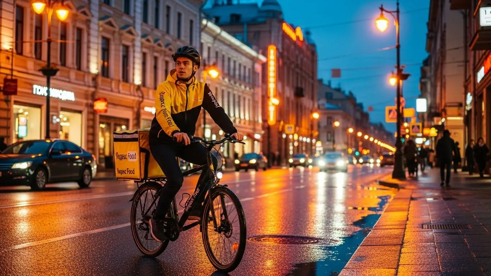
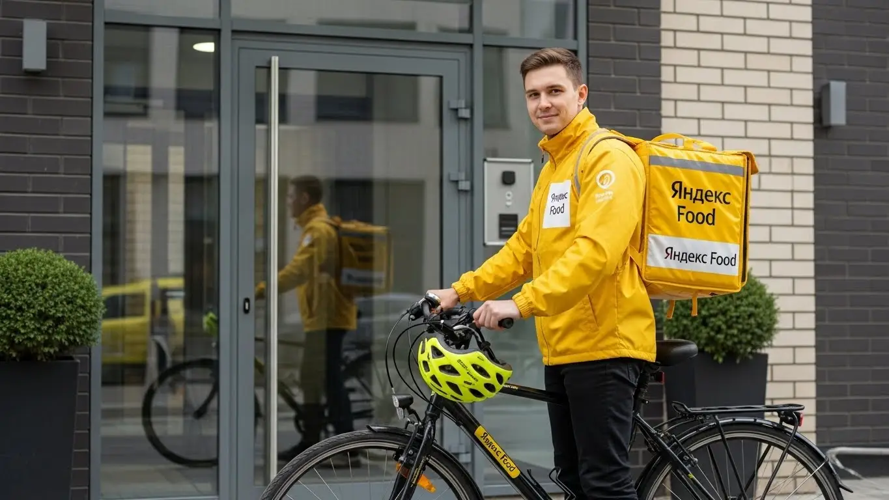
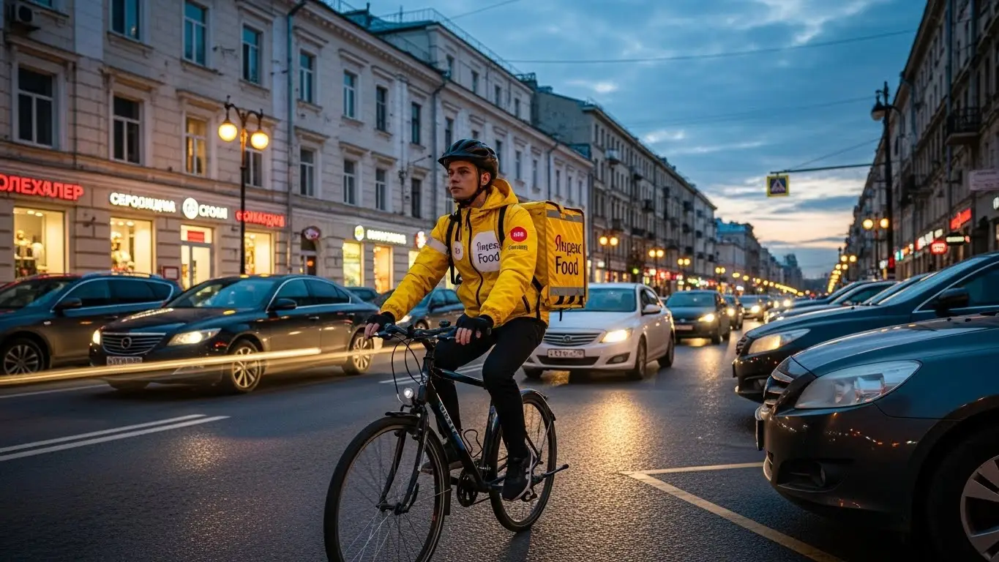
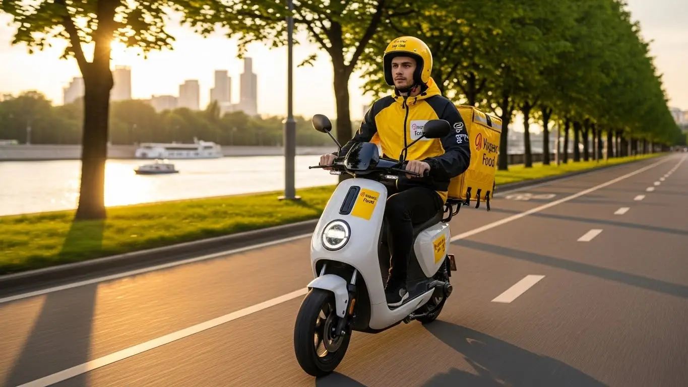

Работа курьером Яндекс Еды в Люберцах в 2025-2026: доход и условия

- Работа курьером Яндекс Еды в Люберцах: для кого эта вакансия и что вы получите
- Сколько вы будете зарабатывать курьером в Люберцах: калькулятор дохода и разбор выплат
- Реальный заработок курьера в Люберцах: смены и месячный доход
- График работы и форматы занятости
- Требования к кандидату и документы
- Самозанятость, налоги и юридическая чистота
- Пошаговое оформление и первый выход на линию в Люберцах
- Пешком, на вело или на авто: что выгоднее в Люберцах
- Районы, маршруты и «топовые» зоны заказов в Люберцах
- Безопасность, страховка, штрафы и оплата простоя
- Плюсы и возможные минусы работы курьером в Люберцах
- Реальные истории и отзывы курьеров из Люберец
- Ответы на главные вопросы о работе курьером Яндекс Еды в Люберцах
- Короткие ответы на главные вопросы
- Итоги и ваш следующий шаг
Все города
Думаешь, работа курьером в Люберцах — это просто крутить педали и получать легкие деньги? Как бы не так. Я тоже так думал, пока не встал в мертвую пробку на Октябрьском проспекте с остывающей пиццей в коробе. Тебя пугают рассказами про копеечные заказы, штрафы за каждую мелочь и убитый за сезон велосипед? Правильно пугают, если не знать, как тут все устроено. Это не Москва с ее велодорожками, это наши Люберцы — со своими правилами, трафиком и «золотыми» часами, о которых молчат в рекламе.
Поверь, разница между тем, кто зарабатывает 3000–4000 рублей за смену, и тем, кто едва отбивает расходы на бензин и обед, — в деталях. Это не только скорость, но и понимание, где в Красной Горке всегда есть спрос, а куда в старых районах лучше не соваться в час пик. Чтобы заранее оценить свои возможности и увидеть актуальные условия, загляните на страницу работа курьером Яндекс Еда в Люберцах, где есть калькулятор дохода и форма заявки. Большинство новичков сливаются в первый же месяц, потому что не учитывают налог для самозанятых, не понимают, как работает приоритет в приложении, и тратят часы впустую, ожидая заказов не в тех зонах. Это игра, и я расскажу тебе ее правила именно для Люберец.
Здесь не будет рекламной воды. Вместе мы честно разберём, на чем выгоднее работать в наших условиях — на своих двоих, на велосипеде или на авто. Посчитаем реальный чистый доход за смену с учетом всех расходов. Я покажу на карте самые «хлебные» районы и мертвые зоны в разное время суток. Расскажу, как люберецкая погода влияет на заработок, за что реально штрафуют и как этого избежать. И, конечно, сравним, что выгоднее — катать за Еду и Лавку или посмотреть в сторону конкурентов.
Меня зовут Алексей. Я сам откатал не одну тысячу километров по Люберцам с желтым коробом за спиной, а сейчас у меня свой небольшой таксопарк-партнер. Я видел эту кухню со всех сторон: и как курьер, и как тот, кто помогает ребятам выходить на линию. Так что я знаю, о чем говорю, и расскажу все как есть, без прикрас. Готов? Тогда давай по порядку, сейчас все разложу по полочкам.
Но сначала — короткий гид по главным темам статьи, чтобы ты сразу сориентировался.
Что ты точно узнаешь из этого разбора
В этой статье ты ТОЧНО узнаешь:
- Сколько на самом деле можно заработать за смену в Люберцах, если вычесть расходы на бензин и еду?
- В каких районах города больше всего заказов и как ловить «фиолетовые зоны» с повышенной оплатой?
- Что выгоднее в люберецких реалиях — ходить пешком, крутить педали или работать на своей машине?
- За что реально штрафуют и снижают рейтинг, и как этого избежать, чтобы не терять заказы?
- Как правильно оформить самозанятость за 10 минут и сколько налогов придётся платить с дохода?
А если тебе некогда читать всю статью — переходи сразу к заключению, где ты найдёшь короткие ответы на все эти вопросы и указания, в каких разделах искать подробности.
А вот ключевые цифры и условия для Люберец в одной картинке:
Работа курьером в Люберцах: ключевые цифры
Доход в час
400–650 ₽
В часы высокого спроса и с учетом бонусов
Заработок за смену
3 200–4 500 ₽
Средний доход за активную смену 8-10 часов
Доход в месяц
75 000–110 000 ₽
При графике 5/2 и полной занятости
Особенности города
Высокий спрос
Активные зоны: центр, новостройки и районы у МКАД
Работа курьером Яндекс Еды в Люберцах: для кого эта вакансия и что вы получите
Давай начистоту: работа курьером в Яндекс Еде — это не для всех, но для многих это отличный вариант. В Люберцах эта вакансия подходит практически любому, кто готов двигаться и хочет получать деньги здесь и сейчас, а не через месяц. Это не та работа, где нужно сидеть в офисе с 9 до 18 и ждать аванса. Здесь всё зависит от тебя, твоего желания и свободного графика.
Я вижу на линии самых разных людей. Студенты, для которых это удобная подработка после пар, чтобы заработать на свои расходы и не просить у родителей. Мужчины, у которых есть основная работа со сменным графиком, и они в выходные доставляют заказы на своем авто. Есть и те, для кого доставка — основной источник дохода. Главное, что объединяет всех — это желание иметь свободный график и ежедневные выплаты. Опыт здесь не нужен, всему научат за полчаса.

Кому подойдёт эта работа в Люберцах
Если ты узнаёшь себя в одном из этих пунктов, то тебе стоит попробовать стать курьером. Во-первых, это идеальная подработка для студентов: можно легко совмещать с учёбой, выходя на смены вечером или в «окнах» между парами. Во-вторых, это хороший старт для тех, у кого нет опыта работы. Никто не будет требовать диплом или резюме на три страницы. Нужен только смартфон и желание работать.
Это также отличный вариант для водителей, которые хотят использовать свою машину для заработка, но не готовы возить пассажиров в такси. Доставка еды и небольших посылок гораздо спокойнее. И конечно, работа курьером подходит всем, кому важен гибкий график и быстрые выплаты. Ты сам решаешь, когда работать, а деньги можешь выводить на карту хоть после каждой смены. Такие ежедневные выплаты дают свободу и уверенность, что ты не останешься без копейки до зарплаты.
Главные преимущества для жителей районов Красная горка, Городок Б, Центральный
Одно из главных удобств работы в Люберцах — возможность доставлять заказы прямо у своего дома. Тебе не нужно тратить час-полтора на дорогу до работы и обратно. Живёшь, например, в районе Красная горка — можешь выбрать эту зону в приложении Яндекс Про и выполнять заказы по знакомым улицам. То же самое касается жителей Городка Б или Центрального района вдоль Октябрьского проспекта.
Это огромное преимущество: ты экономишь не только время, но и деньги на проезд. Вышел из подъезда, включил приложение, и ты уже на работе. Заказы будут приходить из ближайших кафе, ресторанов и магазинов, а доставлять их нужно будет в соседние дома. Ты отлично знаешь свой район, все короткие пути и где лучше срезать, а значит, будешь выполнять заказы быстрее и больше зарабатывать.
Что по доходу и условиям
Теперь о главном — о деньгах. В Люберцах активный курьер за смену в 8–10 часов может заработать в среднем 3000–4500 рублей. Если рассматривать это как подработку на 3–4 часа в день, можно рассчитывать на 1200–2000 рублей. В месяц при полной занятости доход может доходить до 80 000–95 000 рублей и даже больше, особенно если работать на автомобиле в выходные.
Ключевые условия работы просты: свободный график, который ты составляешь сам, и ежедневные выплаты на твою банковскую карту. Чтобы стать курьером, не требуется никакого опыта — всему научат в процессе короткого онлайн-обучения. Ты просто заполняешь анкету, проходишь инструктаж и можешь выходить на линию. Всё прозрачно и без сложных схем.
Вот недавний пример. Парень-студент, живёт в ЖК «Самолёт». После учёбы выходит на 4 часа как велокурьер. Катается по своему району и соседним кварталам, за вечер спокойно делает 1500–1800 рублей. Говорит, на жизнь хватает, и ещё остаётся. Он не тратит время на дорогу, работает на свежем воздухе и сам себе начальник.
В общем, работа курьером в Люберцах — это реальная возможность зарабатывать без начальников и жёсткого графика. Главное преимущество — ты можешь начать в своём районе и получать деньги сразу. Так что, если ищешь подработку или основной доход со свободным графиком, просто попробуй. Ты ничего не теряешь.
Сколько вы будете зарабатывать курьером в Люберцах: калькулятор дохода и разбор выплат
Многих новичков пугает вопрос: «А сколько я реально получу?». Кажется, что система расчёта зарплаты сложная и непрозрачная. На самом деле, всё довольно просто, если один раз разобраться. Твой заработок курьера — это не какая-то фиксированная ставка, а сумма нескольких составляющих. И ты сам можешь влиять на итоговую цифру, выбирая время, место и способ доставки.
Чтобы не гадать на кофейной гуще, в сервисе есть специальный калькулятор дохода. Он помогает прикинуть, сколько можно заработать в твоём городе при разных условиях. Это удобный инструмент, чтобы оценить свой потенциальный заработок ещё до того, как ты выйдешь на первую смену. Давай разберёмся, из чего складываются выплаты и как этим калькулятором пользоваться.
Из чего складывается доход курьера
Твой итоговый доход за смену складывается из нескольких частей, как конструктор. Понимание этой системы поможет тебе зарабатывать больше.
- Оплата за заказ. Это базовая сумма за то, что ты взял и доставил заказ.
- Доплата за расстояние. Чем дальше нести или везти заказ, тем больше доплатят. Система считает оптимальный маршрут и начисляет оплату за каждый километр пути.
- Повышающие коэффициенты. В часы пик (обед, ужин), в плохую погоду или в районах с высоким спросом на карте в приложении Яндекс Про появляются зоны с множителями. Например, «х1.5» или «х2». Это значит, что твой заработок за заказ в этой зоне умножится на указанный коэффициент.
- Бонусы. Сервис часто предлагает персональные цели. Например, «выполни 10 заказов за день и получи бонус 500 рублей». Это отличный способ дополнительно увеличить свой доход.
- Чаевые. Клиенты могут отблагодарить тебя за хорошую работу, оставив чаевые прямо в приложении. Они полностью твои, сервис не берёт с них комиссию.
- Оплата простоя. Важный момент: если ты пришёл в ресторан, а заказ ещё не готов, сервис оплатит тебе время ожидания. Ты не теряешь деньги из-за медлительности кухни.
- Компенсация проезда. На некоторых заказах, особенно если нужно ехать далеко на общественном транспорте, может быть предусмотрена компенсация стоимости билета.
Как пользоваться калькулятором дохода
Калькулятор — это твой помощник в планировании. Пользоваться им элементарно. Заходишь на страницу с калькулятором, выбираешь свой город — Люберцы. Дальше указываешь три основных параметра:
- Тип доставки: пеший курьер, велокурьер или автокурьер.
- Часы работы: сколько часов в день ты планируешь быть на линии (например, 4 часа).
- Дни работы: сколько дней в неделю ты готов работать (например, 5 дней).
После того как ты введёшь эти данные, калькулятор покажет примерный диапазон твоего заработка за день и за месяц. Цифры эти, конечно, ориентировочные, так как не учитывают чаевые и персональные бонусы, но они дают хорошее представление о том, на что можно рассчитывать. Это помогает трезво оценить свои силы и финансовые ожидания.
Прикинь свой возможный доход в Люберцах
Твой примерный доход в месяц:
*Это примерный расчёт на основе средней ставки ~450 ₽/час в Люберцах. Реальный доход зависит от спроса, бонусов, чаевых и типа доставки (пеший, вело или авто).
Чтобы увидеть более точные цифры и актуальные условия, загляни на страницу работа курьером Яндекс Еда в твоём городе — там есть подробный FAQ и форма для быстрой заявки.
Примеры расчёта для пешего, вело- и авто‑курьера в Люберцах
Давай посмотрим на конкретных примерах, как это работает в Люберцах.
- Пеший курьер. Допустим, ты работаешь пешком в центре Люберец, в районе улицы Смирновская и Октябрьского проспекта. Здесь много кафе и плотная жилая застройка, поэтому заказы короткие, но их много. Работая по 6 часов в день 5 дней в неделю, ты можешь рассчитывать на доход около 2000–2500 рублей в день. В месяц это выйдет примерно 40 000–50 000 рублей.
- Велокурьер. На велосипеде ты мобильнее и можешь обслуживать заказы между спальными районами, например, между Красной горкой и Городком Б. Ты быстрее пешего курьера и не зависишь от пробок. При полной занятости (8 часов в день, 5 дней в неделю) твой заработок может составить 3000–3800 рублей в день, а в месяц — 65 000–80 000 рублей.
- Курьер на автомобиле. На машине у тебя самый большой потенциал. Ты можешь брать дальние заказы по всему городу, выезжать в соседние Томилино, Красково или Котельники. Особенно выгодно работать на своем авто в плохую погоду, когда коэффициенты максимальные. При полной занятости твой доход может достигать 4500–6000 рублей в день, что в месяц составит 90 000–120 000 рублей (уже за вычетом расходов на бензин).
Как-то раз я сам вышел на линию на машине в Люберцах в сильный ливень. Весь город горел фиолетовым в приложении Яндекс Про — это зоны максимального спроса. За 5 часов я сделал почти 4000 рублей. Заказы были дорогие, клиенты щедро оставляли чаевые, потому что никто не хотел выходить из дома. Вот так знание системы и правильный момент могут удвоить твой обычный заработок.
В итоге, твой доход напрямую зависит от того, как ты работаешь. Понимая, из чего он складывается, ты можешь им управлять. Мой совет: не бойся экспериментировать. Попробуй выходить в разное время, в разных районах и на разном транспорте, чтобы понять, что для тебя выгоднее всего.
Реальный заработок курьера в Люберцах: смены и месячный доход
Теперь к самому главному, без рекламных обещаний. Всех волнует вопрос — «сколько реально можно заработать курьером в Яндексе?». Цифры зависят от трёх вещей: на чём ты двигаешься, сколько часов работаешь и как подходишь к делу. В Люберцах, как и везде, можно зарабатывать очень по-разному. Кто-то выходит на пару часов в день и получает приятную прибавку к стипендии, а кто-то вкалывает на полную и обеспечивает семью. Ниже разложу всё по полочкам, чтобы у тебя была ясная картина.
Диапазон дохода для подработки и полной занятости
Если ты ищешь подработку на 2–4 часа в день, например, после основной работы или учёбы, то цифры будут примерно такие. Пеший курьер в Люберцах за такую короткую смену может сделать 800–1500 рублей. Велокурьер за то же время заработает больше, около 1200–2000 рублей, потому что успевает выполнить больше заказов на средние дистанции. Водитель-курьер на своём авто за 3–4 часа вечернего пика может поднять и 2000–3000 рублей, особенно если поймает несколько дальних доставок.
При полной занятости, когда ты работаешь по 8–10 часов в день, доход, естественно, выше. Пеший курьер, работая полный день, может рассчитывать на 2500–3500 рублей за смену. Велокурьер — на 3000–4500 рублей. Самый высокий заработок у автокурьеров: при полной занятости и грамотном подходе их дневной доход может достигать 4000–6000 рублей и даже больше. В месяц при графике 5/2 это выливается в 70–90 тысяч для велокурьера и 90–130 тысяч для водителя до вычета расходов на бензин и уплаты налога для самозанятых.
Как район, время суток и погода влияют на доход
Твой заработок — это не просто ставка за час. Он постоянно меняется, и на это влияют три ключевых фактора. Во-первых, время. Самые «жирные» часы — это обеденный пик (с 12:00 до 14:00) и вечерний (с 18:00 до 22:00), а также все выходные и праздничные дни. В это время заказов вал, и система включает повышающие коэффициенты — карта в приложении «Яндекс Про» буквально «горит» фиолетовым, показывая зоны с доплатами.
Во-вторых, погода. Как только начинается дождь, снегопад или сильная жара, большинство людей предпочитают сидеть дома и заказывать доставку. Курьеров на линии становится меньше, а заказов — больше. В итоге коэффициенты взлетают, и за один и тот же заказ можно получить в 1,5–2 раза больше денег. Плюс, в плохую погоду клиенты чаще оставляют щедрые чаевые, ценя твой труд. Наконец, район. В Люберцах больше всего заказов в центре, в районе Октябрьского проспекта, и в густонаселённых жилых комплексах вроде «Красной Горки», где много и ресторанов, и жителей.
Советы по увеличению заработка от опытных курьеров
Чтобы зарабатывать больше, не обязательно работать сутками. Важнее работать с головой. Вот несколько проверенных советов. Всегда смотри на карту спроса в «Яндекс Про» перед выходом на линию и выбирай «горящие» зоны с высокими коэффициентами. Старайся брать плановые слоты на вечернее время и выходные — так у тебя будет приоритет в получении заказов.
Не брезгуй короткими заказами в пиковые часы. Иногда выгоднее сделать три быстрых доставки по 300 рублей в час в зоне с высоким спросом, чем ехать через полгорода за один заказ на 600 рублей. Если есть возможность, сочетай разные виды транспорта. Например, в хорошую погоду используй велосипед для скорости в спальных районах, а в плохую или для дальних заказов — автомобиль. И простое правило: будь вежлив с клиентами. Хорошее отношение часто конвертируется в чаевые, которые за месяц могут составить приятную сумму.
Вот у меня есть парень в парке, работает водителем-курьером в Яндекс Доставке в Люберцах. Его основная работа до пяти вечера. Он выходит на линию с 18:30 до 23:00 в будни и катает полный день в субботу. Специализируется на районах Красная Горка и Городок А. В обычный вечер делает 2000-2500 рублей. А когда в пятницу пошёл ливень, он за те же 4,5 часа заработал почти 4000 рублей за счёт диких коэффициентов и хороших чаевых. В итоге, его подработка приносит ему стабильные 50-60 тысяч в месяц «грязными».
Сравнение примерного дохода в Люберцах
| Тип курьера | Подработка (2–4 часа/день) | Полная занятость (8–10 часов/день) |
|---|---|---|
| Пеший курьер | 800 – 1 500 ₽/смена | 2 500 – 3 500 ₽/смена |
| Велокурьер | 1 200 – 2 000 ₽/смена | 3 000 – 4 500 ₽/смена |
| Водитель-курьер | 2 000 – 3 000 ₽/смена | 4 000 – 6 000 ₽/смена |
В итоге, твой реальный заработок в Люберцах напрямую зависит от твоей стратегии. Можно просто выходить на линию и ждать заказов, а можно анализировать спрос, ловить пиковые часы и плохую погоду, чтобы максимизировать доход. Мой совет: в первый месяц попробуй разные слоты и зоны, чтобы понять, что работает лучше именно для тебя.
График работы и форматы занятости
Одно из главных преимуществ работы курьером — это свободный график. Ты сам решаешь, когда и сколько работать. Никаких начальников, стоящих над душой, и обязательных смен с 9 до 6. Это идеальный вариант для тех, кто ценит свою свободу и хочет совмещать работу с другими важными делами, будь то учёба, основная работа или личные проекты. Система позволяет быть максимально гибким, подстраивая работу под свой ритм жизни, а не наоборот.
Подработка после учёбы или основной работы
Формат подработки — самый популярный. Например, студент местного вуза может спокойно выходить на 2-3 часа после пар. Взял велосипед, выбрал зону рядом с домом в районе Городка Б, и за вечер заработал на свои расходы, не отвлекаясь от учёбы. За неделю так набегает 5-7 тысяч рублей — вполне неплохо для старта без опыта.
Другой частый сценарий — человек с основной работой в офисе. Он приходит домой, ужинает и выходит на авто на 3-4 часа, чтобы поработать в вечерний пик. Особенно выгодно это делать в пятницу и на выходных. Такая подработка может приносить дополнительные 30-50 тысяч в месяц, что является отличным подспорьем для семейного бюджета, погашения кредита или накоплений на отпуск. Главное — ты не привязан к жёсткому расписанию и можешь пропустить день, если устал или появились другие планы.
Полная занятость: как выглядит типичный день курьера
Если рассматривать доставку как основную работу, то день строится по определённому ритму. Обычно курьеры на полной занятости выходят на линию около 10-11 утра. Утренние часы спокойнее, в это время часто падают заказы из магазинов и Яндекс Лавки. К 12 часам дня начинается обеденный пик — это время лучше проводить в районах с бизнес-центрами или большим количеством кафе, например, в центре Люберец.
После 14:00 наступает затишье, которое длится до 17-18 часов. Опытные курьеры используют это время для обеда, отдыха или личных дел. А с шести вечера начинается самый активный и прибыльный период, который продолжается до 22-23 часов. В это время заказов из ресторанов через Яндекс Еду максимальное количество. День получается интенсивным, но сбалансированным, с чередованием активной работы и перерывов.
Как планировать слоты и выходы через приложение «Яндекс Про»
Вся работа управляется через приложение «Яндекс Про». У тебя есть два варианта: свободный выход и плановые слоты. Свободный выход — это когда ты просто нажимаешь кнопку «На линию» в любое удобное время. Плановые слоты — это заранее забронированные смены на определённое время и в определённой зоне. Я настоятельно рекомендую новичкам использовать именно слоты.
Планирование даёт тебе несколько преимуществ. Во-первых, у тебя будет приоритет при распределении заказов перед теми, кто вышел в свободном режиме. Во-вторых, на некоторые слоты действует гарантированный минимальный доход. Чтобы забронировать слот, нужно зайти в раздел «Расписание» в приложении, выбрать подходящий день, время и зону на карте. Очень важно не опаздывать к началу слота, так как это влияет на твой рейтинг и активность, а от них напрямую зависит, как часто и какие заказы ты будешь получать.
У меня есть знакомый, который работает велокурьером на полную ставку. Его типичный день: он заранее бронирует себе 8-часовой слот, например, с 12:00 до 21:00, с часовым перерывом. Он начинает в своём районе, а к вечеру смещается в центр, где выше спрос. За счёт того, что он на плановом слоте, система стабильно подкидывает ему заказы один за другим. В хороший день он делает 20-25 доставок и зарабатывает 4000-4500 рублей. Он говорит, что ключ к стабильности — это дисциплина: вовремя выходить на слот и поддерживать высокий уровень активности.
В общем, гибкость графика — это реальность, а не просто слова. Но чтобы эта гибкость приносила стабильный доход, нужно научиться пользоваться инструментами планирования в «Яндекс Про». Мой совет: комбинируй плановые слоты в пиковые часы с короткими свободными выходами, когда у тебя появляется незапланированное окно времени.
Требования к кандидату и документы
Многих пугает, что для работы курьером нужно собирать кипу бумаг и соответствовать строгим критериям. На деле всё гораздо проще. Требования у Яндекс Еды минимальные, потому что сервис заинтересован в том, чтобы ты как можно быстрее начал доставлять заказы и зарабатывать. Никакого специального образования или опыта работы здесь не требуется — всему научат. Главное — твоё желание и базовая адекватность.
Возраст, гражданство и базовые условия
Давай сразу по главному. Чтобы стать курьером Яндекс Еды, тебе должно быть полных 18 лет. Это строгое правило, связанное с форматом работы и юридической ответственностью, поэтому исключений здесь нет.
По гражданству условия тоже чёткие: ты должен быть гражданином России или одной из стран Евразийского экономического союза (ЕАЭС) — это Беларусь, Казахстан, Армения, Киргизия. Если у тебя гражданство другой страны, но есть вид на жительство или разрешение на временное проживание в РФ, это тоже подходит. Главное, чтобы твой статус позволял легально работать и платить налоги.
Из общих требований — конечно, нужна выносливость. Если ты пеший курьер, будь готов много ходить. Велокурьеру придётся крутить педали. Но не думай, что это работа для олимпийских чемпионов — обычной физической формы вполне достаточно. Ещё одно важное условие — наличие смартфона на базе Android. Приложение «Яндекс Про», через которое ты будешь получать заказы и деньги, работает только на этой операционной системе.

Какие документы нужны для работы курьером
Список документов короткий, и собрать их можно за один день. Никакой беготни по инстанциям не потребуется. Вот что тебе нужно подготовить заранее, чтобы оформление прошло максимально быстро:
- Паспорт. Основной документ, удостоверяющий твою личность. Для граждан РФ — обычный внутренний паспорт. Если ты гражданин страны ЕАЭС, понадобится твой национальный паспорт и, возможно, документы, подтверждающие легальное пребывание в России (миграционная карта, регистрация).
- ИНН (Идентификационный номер налогоплательщика). Он нужен для регистрации в качестве самозанятого. Если ты когда-либо официально работал или получал какие-то вычеты, он у тебя точно есть. Если номера нет или ты его не помнишь, его легко узнать за пару минут на сайте ФНС.
- Личная банковская карта. Подойдёт карта любого российского банка (Сбер, Тинькофф, Альфа — неважно), оформленная на твоё имя. На неё будут приходить выплаты. Карта родственников или друзей не подойдёт.
- Медицинская книжка. Она обязательна для работы с заказами из ресторанов. Без неё тебе будут доступны только доставки из магазинов или посылки. Советую оформить её сразу — так у тебя будет больше заказов, а значит, и доход будет выше. В Люберцах есть несколько медцентров, где это можно сделать за 2–3 дня.
Можно ли работать с 16 лет и какие есть альтернативы
Частый вопрос от молодых ребят: берут ли в курьеры Яндекс Еды с 16 или 17 лет? Отвечаю честно — нет. Как я уже сказал, минимальный возраст для работы в сервисе — 18 лет. Это связано с тем, что курьеры сотрудничают с сервисом в статусе самозанятых партнёров, а полная дееспособность и возможность самостоятельно заключать такие договоры и платить налоги наступает именно с совершеннолетием.
Понимаю, что хочется заработать свои деньги, но правила есть правила. Если тебе ещё нет 18, лучше рассмотреть другие варианты подработки, где официально трудоустраивают подростков по ТК РФ. Например, можно устроиться промоутером, поработать в сетях быстрого питания или помощником в магазине на летних каникулах. А как только исполнится 18 — добро пожаловать в доставку, здесь тебя будут ждать.
***
Из практики: У меня был случай с парнем, назовём его Денис. Ему было 20, он приехал в Люберцы из другого города, хотел быстро найти подработку. Думал, что оформление займёт неделю. Я ему по пунктам разложил, что нужно. Паспорт и карта у него были. ИНН он нашёл на «Госуслугах» за пять минут. На следующий день с утра сходил в медцентр на Инициативной улице, сдал анализы на медкнижку. Пока она делалась, он уже прошёл онлайн-обучение, получил фирменную термосумку и начал выполнять заказы из магазинов. Через три дня забрал готовую медкнижку, и ему открылся полный доступ ко всем заказам. Весь процесс от «хочу работать» до первого полноценного дня занял меньше четырёх дней.
***
Краткий вывод: Условия и требования к курьерам очень лояльные: возраст от 18 лет, гражданство РФ или ЕАЭС и базовый пакет документов. Никаких сложностей здесь нет, всё сделано для того, чтобы ты мог начать зарабатывать как можно скорее. Мой совет: если у тебя нет медкнижки, займись её оформлением в первую очередь. Это расширит твои возможности и напрямую повлияет на доход.
Самозанятость, налоги и юридическая чистота
Многих новичков отпугивает слово «самозанятость». Кажется, что это что-то сложное, связанное с налогами, отчётами и бумажной волокитой. На самом деле, это самый простой и прозрачный способ работать на себя и получать официальный доход. Яндекс Еда выбрала эту модель не чтобы усложнить тебе жизнь, а наоборот — чтобы сделать сотрудничество максимально легальным и удобным для обеих сторон.
Почему курьеры Яндекс Еды работают как самозанятые
Самозанятость, или налог на профессиональный доход (НПД), — это специальный налоговый режим. Ты регистрируешься как исполнитель услуг и платишь небольшой налог со своего заработка. Для тебя как для курьера это сплошные плюсы.
Во-первых, это официальный доход. Все деньги, которые ты получаешь от Яндекса, — белые. Ты можешь взять кредит в банке, подтвердить свой заработок для получения визы или для любых других целей. Во-вторых, никакой сложной бухгалтерии. Тебе не нужно нанимать бухгалтера, сдавать декларации и разбираться в отчётах. Всё происходит автоматически в приложении. В-третьих, это легальность и безопасность. Ты работаешь вчистую, честно платишь налоги и спишь спокойно, не боясь проверок со стороны налоговой. Это гораздо надёжнее, чем получать деньги «в конверте».
Как за 10 минут оформить самозанятость через «Мой налог»
Регистрация статуса самозанятого занимает меньше времени, чем поход в магазин. Всё делается онлайн через официальное приложение от Федеральной налоговой службы. Вот простая пошаговая инструкция:
- Скачай приложение «Мой налог» в Google Play. Оно бесплатное и официальное.
- Открой приложение и выбери способ регистрации. Самый простой — «По паспорту РФ».
- Отсканируй паспорт. Наведи камеру телефона на главный разворот паспорта. Приложение само распознает все данные.
- Сделай селфи. Программа попросит тебя сфотографироваться, чтобы подтвердить, что это действительно ты. Просто моргни на камеру, когда попросят.
- Подтверди регистрацию. Проверь свои данные и нажми кнопку «Подтверждаю». Всё, через несколько минут тебе придёт уведомление, что ты официально стал самозанятым.
Весь процесс интуитивно понятен и реально занимает 5–10 минут. После этого тебе нужно будет только привязать свой статус в приложении «Яндекс Про», и можно начинать работать.
Сколько и как платить налоги
Здесь тоже всё максимально просто и прозрачно. Ставка налога для самозанятого, который работает с юридическими лицами (а Яндекс — это юрлицо), составляет 6% от дохода. Никаких других скрытых платежей, взносов в пенсионный фонд или комиссий нет. Только 6%.
Процесс оплаты полностью автоматизирован. Тебе не нужно ничего считать самому. Яндекс после каждой выплаты передаёт данные о твоём доходе в налоговую. Приложение «Мой налог» само рассчитывает сумму налога за прошедший месяц и до 12-го числа следующего месяца присылает тебе уведомление с итоговой суммой. Оплатить налог нужно до 28-го числа. Это можно сделать прямо в приложении, привязав банковскую карту.
Кроме того, каждому новому самозанятому государство даёт бонус — налоговый вычет в размере 10 000 рублей. Пока этот бонус не исчерпается, твой налог будет ещё меньше (фактически 4% вместо 6%). Это делает работу вбелую ещё выгоднее, чем любые «серые» схемы.
***
Из практики: Один из моих водителей, Сергей, долгое время работал неофициально в разных местах. Когда он пришёл устраиваться курьером, больше всего боялся именно налогов. Думал, что это сложно, что придётся куда-то ездить, стоять в очередях. Я сел рядом с ним, мы вместе скачали «Мой налог», и он зарегистрировался за 7 минут, пока пил кофе. Когда в следующем месяце ему пришёл первый налог — около 2000 рублей с его подработки — он был удивлён, насколько это просто. Заплатил в один клик. Теперь он всем знакомым рассказывает, что самозанятость — это удобно, и что он впервые в жизни не боится, что банк заблокирует карту из-за «непонятных поступлений».
***
Краткий вывод: Самозанятость — это не проблема, а современное решение. Оно даёт тебе официальный статус, легальный доход и полное отсутствие головной боли с отчётностью. Весь процесс оформления и уплаты налогов автоматизирован и занимает минимум времени. Мой совет: не бойся этого статуса. Он даёт тебе гораздо больше уверенности и защиты, чем любая неофициальная подработка.
Пошаговое оформление и первый выход на линию в Люберцах
Шаг 1–2: анкета и онлайн‑обучение
Весь процесс трудоустройства построен так, чтобы ты не тратил время на поездки в офис. Всё начинается с простой онлайн-анкеты, где нужно указать ФИО, контакты и гражданство. Это отличная возможность начать работать курьером без опыта — никаких сложных вопросов про образование здесь не задают. После заполнения данные уходят на быструю проверку, которая обычно занимает от 15 минут до пары часов.
Как только анкету одобрят, тебе откроется доступ к короткому онлайн-обучению. Это не лекции, а несколько интерактивных блоков с видео и тестами. В них по делу объясняют, как пользоваться приложением «Яндекс Про», какие есть стандарты сервиса и основные правила безопасности. Проходишь финальный тест, чтобы подтвердить знания, — и ты практически готов к работе. Весь этот этап можно спокойно пройти из дома с телефона за час-полтора.
Шаг 3: получение сумки и доступа к заказам в Люберцах
Следующий шаг — получить главный инструмент, фирменную термосумку (или термокороб, если планируешь доставлять на авто). В Люберцах и ближайших районах есть несколько вариантов. Чаще всего сумку можно забрать в курьерском центре или у партнёров сервиса Яндекс Еда. Иногда её могут привезти доставкой прямо домой — это самый удобный способ.
Все доступные варианты и точные адреса точек выдачи появятся в приложении «Яндекс Про» после успешного обучения. Там же будет указан график их работы. Как только термокороб или сумка у тебя на руках и ты активировал их в приложении, система открывает полный доступ к заказам. С этого момента ты — полноценный курьер-партнёр сервиса.
Шаг 4: первый слот и первый доход
Теперь самое интересное — первый выход на линию. Открываешь «Яндекс Про», смотришь на карту Люберец и выбираешь свободный слот. Слот — это запланированный отрезок времени (например, 4, 6 или 8 часов), в течение которого ты будешь выполнять заказы. Для первого раза советую выбрать короткий слот на 2–4 часа в знакомом районе, например, в центре у Октябрьского проспекта или в своём жилом квартале. Так будет спокойнее, не придётся плутать по незнакомым дворам.
Выходишь на линию, и приложение начинает предлагать заказы. Принимаешь первый, забираешь его из ресторана или магазина и отвозишь клиенту. Маршрут строится прямо в приложении, всё просто. Выполнил один заказ — тут же может прийти следующий. Деньги за доставки поступают на баланс в Яндекс Про сразу. Сервис предлагает ежедневные выплаты, так что первый доход можно вывести на карту уже после смены. По сути, от заполнения анкеты до первого заработка может пройти меньше суток.
Недавно ко мне в парк пришёл парень, студент из Люберец. Утром заполнил анкету, пока ехал в институт. Днём, между парами, прошёл обучение с телефона. Вечером ему уже привезли сумку. Он не стал откладывать, сразу выбрал трёхчасовой слот в своём районе «Красная горка» — отличный пример гибкого графика. За эти три часа спокойно сделал 5 заказов из местных кафе, заработал около 1200 рублей, включая первые чаевые. Говорит, был удивлён, насколько всё быстро и без бюрократии.
В итоге, весь процесс оформления максимально упрощён. Условия работы курьером в Яндексе позволяют начать зарабатывать очень быстро. От тебя требуется только внимательность при заполнении данных и прохождении обучения. Главный совет: не затягивай с получением сумки. Чем быстрее ты её заберёшь, тем быстрее сможешь выйти на линию.
Пешком, на вело или на авто: что выгоднее в Люберцах
Пеший курьер: для центра и плотной застройки в Люберцах
Работа пешком — отличный вариант для старта или как подработка, если у тебя нет велосипеда или машины. Этот формат идеален для центральной части Люберец, где много заказов на короткие расстояния — например, в районе Октябрьского проспекта и улицы Смирновской. Здесь сосредоточено большинство кафе и магазинов, поэтому заказы часто идут «из-за угла», на 500–1500 метров.
Главный плюс пешего курьера — нулевые расходы на транспорт. Ты не зависишь от пробок, не ищешь парковку, а заказы в плотной застройке выполняешь быстро, срезая путь через дворы. Конечно, доход в час будет чуть ниже, чем у вело- или автокурьера, но для подработки на 3–4 часа в день в зонах с высоким спросом это вполне выгодный вариант. Плюс, это неплохая физическая нагрузка, за которую ещё и платят.

Велокурьер: быстрые доставки между спальными районами
Велосипед — это золотая середина и один из самых эффективных способов доставки в Люберцах. Велокурьер значительно быстрее пешего, но так же не зависит от пробок, которые в часы пик сковывают основные магистрали. Велосипед позволяет легко маневрировать между крупными жилыми массивами, где много заказов из супермаркетов и пиццерий.
Особенно выгодно работать на велосипеде в таких районах, как «Красная горка» или «Городок Б». Это огромные спальные районы с большим количеством многоэтажек. Расстояния там уже приличные для пешехода, но идеальные для велосипеда. За час можно выполнить 3–4 заказа, тогда как пеший курьер успеет сделать 1–2. Это своего рода «оплачиваемый фитнес»: и деньги зарабатываешь, и в форме себя поддерживаешь.
Водитель‑курьер: заказы по всему городу и пригороду Томилино, Котельники
Работа курьером на своем авто открывает доступ к самым денежным заказам. Это доставки на дальние расстояния, крупные заказы из гипермаркетов, которые пешком или на вело не унести, а также работа по всему городу и в пригородах. Если ты живёшь в Люберцах, на машине будут доступны заказы не только по городу, но и в соседние Томилино, Котельники, Дзержинский. Такие заказы оплачиваются значительно выше за счёт доплаты за километраж.
Особенно выгодно работать на авто в плохую погоду — в дождь, снег или мороз. В это время количество заказов резко растёт, включаются повышенные коэффициенты, а пеших и велокурьеров на линии становится меньше. Да, есть расходы на бензин и амортизацию, но при грамотном подходе доход их с лихвой перекрывает. Водитель-курьер на полной занятости в Люберцах может получать самый высокий заработок в сервисе.
Один из моих водителей-курьеров, Сергей, работает только по вечерам и в выходные. Он живёт в Люберцах и специализируется на заказах из крупных ТЦ вроде «Светофора» и «Орбиты» в дальние части города или в Котельники. В пятницу вечером, когда пробки и плохая погода, он за 4–5 часов может заработать 4000–5000 рублей. Секрет, по его словам, в том, чтобы ловить «дорогие» заказы и не бояться ехать туда, куда пешие курьеры не дойдут.
Сравнение форматов доставки в Люберцах
| Параметр | Пеший курьер | Велокурьер | Водитель-курьер |
|---|---|---|---|
| Средний доход в час | 300–500 ₽ | 400–700 ₽ | 600–1000+ ₽ (за вычетом расходов) |
| Оптимальная зона работы | Центр Люберец, плотная застройка | Спальные районы («Красная горка», «Городок Б») | Весь город, пригороды (Томилино, Котельники) |
| Плюсы | Нет расходов, фитнес, независимость от пробок | Скорость, маневренность, большой радиус доставки | Комфорт, самые дорогие заказы, работа в любую погоду |
| Минусы / Расходы | Физическая усталость, медленная скорость, зависимость от погоды | Нужен велосипед, усталость, сезонность | Расходы на бензин и амортизацию, пробки, парковка |
В общем, выбор транспорта напрямую влияет на твой потенциальный доход и географию работы в Люберцах. Здесь есть место для каждого формата, главное — правильно оценить свои силы и цели. Мой совет: если есть возможность, начни с велосипеда — это самый сбалансированный вариант по скорости и затратам. Если же нацелен на максимальный заработок и есть машина — смело выбирай работу на своем авто, особенно в пиковые часы и непогоду.
Районы, маршруты и «топовые» зоны заказов в Люберцах
Чтобы в Люберцах зарабатывать курьером хорошие деньги, мало просто быстро бегать или крутить педали. Нужно понимать город, знать, где и когда «клюёт». Опытный курьер работает головой: он не мотается через весь город за одним заказом, а выстраивает смену так, чтобы быть в центре событий. Правильно выбранный район — это половина успеха, потому что именно там сосредоточены заказы с высокими коэффициентами.
Где больше всего заказов: ТРЦ, бизнес‑центры и жилые массивы
Самые «жирные» зоны — это, конечно, места, где люди тратят деньги. В Люберцах это в первую очередь крупные торговые центры. Запомни два главных адреса: ТРЦ «Светофор» на Пионерской и ТРЦ «Орбита» на Октябрьском проспекте. Вокруг них всегда полно ресторанов, кафе и магазинов, которые генерируют постоянный поток заказов для Яндекс Еды и Доставки, особенно в обеденное время, по вечерам и в выходные.
Ещё одна стабильная зона — район вокруг железнодорожной станции Люберцы-1. Там всегда много людей, офисов и, соответственно, заказов еды. В приложении «Яндекс Про» такие места на карте спроса подсвечиваются фиолетовым цветом. Видишь такую зону — значит, там сейчас действует повышающий коэффициент, и за каждый заказ ты получишь больше денег. Новичкам советую начинать именно с таких понятных и предсказуемых локаций.
Работа в своём районе: примеры для популярных жилых кварталов
Многие думают, что весь доход только в центре, и это ошибка. Гоняться за заказами через весь город — значит, тратить время и силы впустую. Куда выгоднее досконально изучить свой район и работать рядом с домом. Например, в таких крупных жилых массивах, как «Красная горка» или «Городок Б», заказов не меньше, а конкуренция может быть ниже.
Подумай сам: тысячи семей живут в этих новостройках. Вечером они заказывают ужины из местных ресторанов, в выходные — продукты из «Пятерочки» и «ВкусВилла». Для велокурьера или пешего курьера это идеальные условия работы: короткие дистанции, знакомые дворы и подъезды. Ты не тратишь час на дорогу до «рыбного места», а выходишь на линию за пять минут и сразу начинаешь зарабатывать. Отличный вариант для подработки.
Как выбирать зоны и слоты в «Яндекс Про», чтобы не мотаться впустую
Приложение «Яндекс Про» — твой главный инструмент планирования. Не выходи на линию вслепую. Перед началом смены открой карту и посмотри, где прогнозируется высокий спрос. Планируй свои слоты (рабочие интервалы) заранее, особенно на вечер пятницы и выходные — это пиковое время. Система видит твой запланированный слот и начинает подбирать заказы под тебя.
Главный секрет, чтобы не ездить порожняком, — стараться работать в зонах с высокой плотностью заказов. Алгоритм умный: он пытается выстраивать «цепочки», то есть после завершения одного заказа сразу даёт новый, который находится поблизости. Если ты возьмёшь один дальний заказ в какой-нибудь тихий частный сектор, рискуешь потом полчаса ждать следующего. Лучше сделать три коротких заказа в оживлённом квартале, чем один длинный в никуда.
Из практики: один знакомый велокурьер сначала всё время рвался в центр Люберец, к «Орбите», говорил, что там коэффициенты выше. Но потом он посчитал: на дорогу туда-обратно уходит почти полтора часа, плюс накапливается усталость. В итоге он решил попробовать отработать вечерний слот чисто по своему району «Красная горка». Результат? За 6 часов сделал 18 заказов (в основном доставка продуктов и пиццы), намотал меньше километров и заработал 3800 рублей. С тех пор он из своего района почти не выезжает.
В общем, главный вывод такой: изучай карту спроса в приложении Яндекс Про, не пренебрегай своим районом и старайся работать в зонах, где заказы идут один за другим. Это сэкономит тебе и время, и силы, а доход сделает стабильным.
Безопасность, страховка, штрафы и оплата простоя
Работа курьера — это не только деньги и свободный график, но и ответственность. Ты работаешь на улице, в потоке людей и машин. Поэтому важно говорить начистоту о правилах, рисках и о том, как сервис защищает тебя в непредвиденных ситуациях. Это не для того, чтобы напугать, а чтобы ты чувствовал себя уверенно и знал, что делать.
Бесплатная страховка на сменах и что она покрывает
Самое важное, что нужно знать: как только ты выходишь на запланированный слот, твоя жизнь и здоровье застрахованы. Это бесплатно, всё оплачивает сервис. Страховка действует всё время, пока ты выполняешь заказы — с момента принятия первого и до завершения последнего. Покрытие — до 2 миллионов рублей.
Что это значит на практике? Если, не дай бог, ты попал в ДТП на велосипеде и сломал руку, или поскользнулся зимой и получил травму — это страховой случай. Ты не останешься с проблемой один на один. Нужно сразу сообщить о случившемся в службу поддержки через «Яндекс Про», они дадут чёткую инструкцию, как действовать дальше для получения компенсации. Это серьёзная гарантия и важная часть условий работы, которой нет у многих конкурентов.
Правила безопасности на дороге и при доставке
Банальные вещи, о которых многие забывают в спешке. Но именно они сохраняют тебе здоровье и деньги.
- Для пеших курьеров: всегда переходи дорогу по пешеходному переходу, даже если кажется, что машин нет. Не утыкайся в телефон на ходу. Вечером носи одежду со светоотражающими элементами, чтобы водители тебя видели издалека.
- Для велокурьеров: шлем — это не обсуждается. Это твоя главная защита. Обязательно используй фонари в тёмное время суток. Соблюдай ПДД, будь предсказуемым на дороге, показывай манёвры рукой. Опасайся открывающихся дверей припаркованных машин — это классическая ловушка.
- Для водителей-курьеров: не гоняй. Лишние 5 минут не стоят риска ДТП. Паркуйся по правилам, чтобы не создавать проблем и не получать штрафы. Лучше пройти 50 метров пешком, чем бросить машину под знаком.
И общее для всех: в плохую погоду (дождь, гололёд) снижай скорость вдвое. Убедись, что заказ надёжно упакован в термосумку или термокороб — пицца должна приехать горячей, а суп не должен пролиться.
Какие бывают штрафы и как их избежать
Давай честно: штрафы в Яндекс Еде есть, но их не выписывают за мелочи. Чтобы нарваться на санкции, нужно совершить серьёзное нарушение. Обычно рейтинг снижают или штрафуют за несколько вещей: регулярные сильные опоздания, порчу заказа по своей вине, грубость клиенту или сотруднику ресторана, работу без термосумки или отмену уже принятого заказа без веской причины.
Как этого избежать? Элементарной вежливостью и ответственностью. Если ресторан задерживает заказ, не жди молча — напиши в поддержку, они зафиксируют этот факт, и к тебе не будет претензий. Если понимаешь, что опаздываешь к клиенту из-за пробки, тоже сообщи в чат. Главное — быть на связи и вести себя адекватно. За тысячи выполненных заказов у моих водителей штрафы были единичными, и всегда по делу.
Что такое оплата простоя и как она защищает ваш доход
Это одна из ключевых фишек, которая выгодно отличает работу в Яндекс Еде. Представь, ты вышел на плановый слот, находишься в нужной зоне, готов работать, а заказов временно нет. В большинстве других сервисов это твои проблемы — нет заказов, нет денег. Здесь всё иначе. Система видит, что ты на линии и ждёшь, и если заказов нет, тебе начисляется минимальная гарантированная оплата за это время.
Например, в какой-то час было всего два коротких заказа, а остальное время ты просто ждал. Твой доход за этот час всё равно не будет нулевым. Сервис доплатит до определённого минимального порога. Это своего рода финансовая подушка безопасности, которая делает твой заработок более стабильным и предсказуемым. Ты можешь быть уверен, что твоё время не пропадёт даром, даже если спрос в конкретный момент просел.
Мой совет по этому блоку простой: относись к работе серьёзно. Помни о безопасности, будь вежлив и знай, что у тебя есть и страховка, и финансовая защита от простоя. Это не просто подработка, а партнёрство, где у каждой стороны есть свои права и обязанности.
Плюсы и возможные минусы работы курьером в Люберцах
Как и в любом деле, в работе курьером есть две стороны медали. С одной стороны — свобода и живые деньги каждый день, с другой — работа на ногах и зависимость от погоды. Давай без прикрас разберём, какие условия работы тебя ждут на улицах Люберец, чтобы ты мог принять взвешенное решение. Это не та работа, где можно отсидеться в тепле, но если подойти к ней с умом, она может стать отличным источником дохода.
Сильные стороны работы курьером в Люберцах
Главное, за что ценят эту работу — это реальная свобода и контроль над своим временем и деньгами. Ты сам себе начальник, и это не просто красивые слова.
Во-первых, это гибкий график. Ты сам решаешь, когда выходить на линию и на сколько. Хочешь — работай по 2–3 часа после основной работы или учёбы, хочешь — выходи на полную 8-часовую смену. Никто не будет стоять над душой с упрёками за опоздание. Планируешь всё через приложение «Яндекс Про», выбирая удобные слоты.
Во-вторых, ежедневные выплаты. Забудь про ожидание зарплаты до конца месяца. Деньги за выполненные заказы приходят на твою карту практически сразу. Это огромный плюс, когда срочно нужны средства или просто хочешь видеть результат своего труда каждый день. Оформление в качестве самозанятого делает этот процесс полностью официальным и прозрачным.
Третий важный момент — работа рядом с домом. Люберцы — город большой, но тебе не придётся мотаться из одного конца в другой. Можно выбрать свой район, например, Красную Горку или Городок Б, и выполнять заказы в привычной обстановке. Это экономит и время, и силы на дорогу.
Наконец, ты не остаёшься один на один с проблемами. На смене действует бесплатная страховка жизни и здоровья, а в приложении круглосуточно работает служба поддержки, готовая помочь в любой непонятной ситуации. Это даёт уверенность, что в случае чего тебе помогут.
С какими сложностями чаще всего сталкиваются курьеры
Теперь о том, к чему нужно быть готовым. Идеальной работы не бывает, и здесь есть свои нюансы, которые для кого-то могут стать решающими.
Основной минус — физическая нагрузка. Если ты пеший или велокурьер, будь готов много ходить или крутить педали. Особенно в первые недели ноги могут гудеть с непривычки. Мой совет: начинай с коротких смен по 3–4 часа, вложись в удобную обувь и не пытайся ставить рекорды в первый же день.
Вторая сложность — работа в плохую погоду. Дождь, снегопад, летний зной или сильный ветер — твои постоянные спутники. С одной стороны, в такую погоду заказов больше и коэффициенты выше, то есть можно хорошо заработать. С другой — это просто тяжело и некомфортно. Решение — качественная непромокаемая одежда и термобельё. Не экономь на экипировке, это твоё здоровье и комфорт.
Иногда случаются простои, когда заказов мало. Обычно это происходит в середине буднего дня. Хоть сервис и предлагает минимальные гарантии оплаты за время на слоте, сидеть без дела неприятно. Чтобы этого избежать, изучай город: выходи на линию в часы пик (обед с 12 до 15, ужин с 18 до 21), в выходные и праздничные дни, когда спрос максимальный.
Ну и, конечно, общение с разными клиентами. 99% людей адекватны и вежливы, но всегда есть шанс столкнуться с негативом. Главное правило — сохранять спокойствие, быть вежливым и в случае конфликта сразу обращаться в поддержку. Не пытайся решить проблему самостоятельно, для этого есть специальные алгоритмы.
Кому такая работа подходит, а кому лучше поискать другой формат
Давай по-честному. Эта работа — отличный вариант для определённого типа людей, но совершенно не подойдёт другим.
Эта работа для тебя, если ты:
- Студент и ищешь подработку, которую легко совмещать с учёбой.
- Активный человек, который не любит сидеть на месте и готов к физическим нагрузкам.
- Нуждаешься в деньгах «здесь и сейчас» и не хочешь ждать зарплату месяц.
- Ищешь дополнительный доход к основной работе, выходя на линию по вечерам или выходным.
- Ценишь свободу и не хочешь работать под жёстким контролем начальства.
Лучше поискать что-то другое, если ты:
- Имеешь серьёзные проблемы со здоровьем, которые мешают долго ходить или находиться на улице.
- Категорически не переносишь плохую погоду и холод.
- Ищешь стабильную офисную работу с фиксированным окладом, отпуском и больничными.
- Предпочитаешь умственный труд физическому и хочешь работать удалённо из дома.
У меня был знакомый парень, бывший системный администратор, который после сокращения пошёл в курьеры. Первые пару недель он был в шоке от того, сколько приходится ходить, и хотел всё бросить. Но потом втянулся, купил простой велосипед, изучил, где в Люберцах больше всего заказывают (в основном это зоны вокруг ТРЦ «Выходной» и «Светофор»), и за полгода не только вышел на стабильный заработок, но и скинул 10 килограммов. Говорит, что ни за что не вернётся в офис.
Работа курьером — это не лёгкие деньги, а честный труд. Главные плюсы — свободный график и ежедневные выплаты, а основные минусы — физическая нагрузка и зависимость от погоды. Прежде чем начинать, трезво оцени свои силы и готовность к уличной работе. Если ты активен и ценишь свободу, такая подработка или даже основная работа может стать для тебя отличным вариантом.
Реальные истории и отзывы курьеров из Люберец
Цифры и условия — это одно, а живой опыт — совсем другое. Я поговорил с несколькими ребятами, которые работают в Люберцах, чтобы ты увидел картину изнутри. У каждого своя история и свой подход к работе.
История студента Люберецкого техникума имени Гагарина, который совмещает учёбу и доставку
«Меня зовут Максим, мне 19. Учусь на программиста, пары бывают в разное время, так что стандартная работа мне не подходит. Живу в районе Городка А. Начал работать велокурьером полгода назад, чтобы иметь свои карманные деньги и не просить у родителей. Мой график простой: смотрю расписание в техникуме и заранее планирую слоты в „Яндекс Про“. Обычно выхожу на 3–4 часа по вечерам в будни, примерно с 18:00 до 22:00, когда люди заказывают ужин. В выходные стараюсь отработать одну полную смену, часов на 8. В среднем мой недельный заработок — около 10–12 тысяч рублей. Этих денег мне с головой хватает на развлечения, одежду и помощь родителям с коммуналкой. Главное — научиться распределять силы и не выходить на линию уставшим после учёбы».
Опыт автокурьера, который выходит в пиковые часы
«Игорь, 48 лет. У меня основная работа в строительной фирме, график с 9 до 18. Но платежи по кредиту сами себя не закроют, поэтому решил подрабатывать на своей машине. В Яндекс Еде я работаю исключительно в „жирные“ часы. Мои смены — это вечер пятницы, вся суббота и вечер воскресенья. Я специально выбираю слоты с повышенным спросом, когда в приложении карта „горит“ фиолетовым. Езжу по всему городу, часто беру заказы в дальние районы — Марусино, Некрасовку, Котельники. На машине это не проблема, а платят за такие доставки больше. В плохую погоду — дождь или снегопад — спрос взлетает, и за 4–5 часов можно заработать как за целый день в обычную погоду. Такой формат „охотника за коэффициентами“ приносит мне дополнительные 30–40 тысяч в месяц. Машину греть не надо, сидишь в тепле, слушаешь музыку — для меня это идеальная подработка».
Мнение велокурьера о работе в центре и спальниках
«Светлана, 28 лет, работаю велокурьером уже год. Для себя я чётко разделила Люберцы на две зоны со своими плюсами и минусами. Центр, то есть район вокруг станции Люберцы-1 и Октябрьского проспекта, — это постоянный поток заказов. Здесь куча кафе и ресторанов, доставки короткие, буквально в соседний дом. Но есть и минусы: много людей, плотный трафик, вечно ищешь, где припарковаться, чтобы не мешать пешеходам. В час пик тут бывает сложно проехать. Спальные районы, вроде Красной Горки или 115-го квартала, — совсем другая история. Здесь спокойнее, меньше машин, можно ехать не торопясь. Заказы в основном из продуктовых магазинов и пиццерий. Расстояния бывают побольше, но зато часто оставляют хорошие чаевые, особенно семьи с детьми. Мне нравится начинать смену в спальнике, а к вечернему пику перемещаться ближе к центру. Пришлось привыкнуть к тому, что нужно постоянно анализировать карту спроса в приложении Яндекс Про и быть мобильной».
Как видишь, каждый находит свой подход к работе в доставке. Кто-то берёт гибкостью и совмещает с учёбой, кто-то использует машину для максимального заработка в пиковые часы, а кто-то комбинирует разные районы для стабильного потока заказов. Главный совет от всех — не бойся экспериментировать. Попробуй поработать в разное время и в разных частях Люберец, чтобы понять, какие условия и формат подходят именно тебе.
Ответы на главные вопросы о работе курьером Яндекс Еды в Люберцах
Здесь я собрал ответы на те вопросы, которые мне задают чаще всего. Это поможет тебе развеять последние сомнения и понять, подходят ли тебе условия этой работы.
Нужно ли оформлять самозанятость и как платить налоги?
Да, для прямого сотрудничества с Яндекс Едой требуется оформление статуса самозанятого (НПД). Не пугайся, это несложно и делается за 10–15 минут через приложение «Мой налог» или прямо в «Яндекс Про». Это твой официальный доход, всё легально. Налог для самозанятых составляет 6% с поступлений от юридических лиц, которым и является Яндекс. Приложение само всё посчитает, тебе останется только нажать кнопку «Оплатить» раз в месяц. Это гораздо проще и выгоднее, чем открывать ИП или работать «всерую».
Какой телефон и интернет нужны для работы курьером?
Тебе понадобится смартфон на базе Android версии 7.0 и выше. Приложение «Яндекс Про», через которое идут все заказы на доставку, на айфонах для курьеров не работает. Важно, чтобы телефон хорошо держал зарядку, потому что GPS и постоянно включённый экран быстро его садят. Мой совет — всегда носи с собой пауэрбанк. Интернет должен быть стабильным, любой крупный оператор с хорошим покрытием в Люберцах подойдёт. Без связи ты не сможешь получать заказы и видеть карту.
Что будет, если в смену мало заказов — как работает оплата простоя?
Это одно из главных преимуществ работы в Яндексе. Если ты вышел на запланированный слот (заранее выбрал время и район), а заказов мало, ты не будешь сидеть бесплатно. Сервис гарантирует минимальную оплату за час — это и есть оплата простоя. Если твой доход с заказов за это время окажется ниже установленного минимума, Яндекс доплатит разницу. Эта система защищает твой заработок и даёт уверенность, что ты не потратишь время впустую.
Есть ли в Яндекс Еде штрафы и за что их могут применить?
Говоря прямо, в сервисе есть система мотивации. Это не столько штрафы в привычном понимании, сколько корректировки дохода или снижение приоритета при серьёзных нарушениях. Например, если ты постоянно опаздываешь на слот, отменяешь уже принятый заказ без веской причины, портишь еду или грубишь клиенту. Но если ты работаешь добросовестно, следуешь простым правилам из обучения, то с этим не столкнёшься. Цель системы — поддерживать качество сервиса, а не отбирать у тебя деньги.
Обязательно ли покупать термокороб и сколько он стоит?
Термокороб или термосумка — обязательный атрибут для доставки заказов из ресторанов и магазинов. Без него система просто не даст тебе такие заказы. Но покупать его за свои деньги чаще всего не нужно. Яндекс и его партнёры предлагают несколько вариантов: можно взять брендированную сумку в аренду за символическую плату, которая списывается с баланса, или получить её бесплатно в рамках приветственных бонусов. Иногда можно использовать и свою сумку, если она подходит по размерам и требованиям сервиса. Все детали расскажут на этапе оформления.
Сколько реально можно заработать курьером в Люберцах и чем эта вакансия лучше других сервисов?
В Люберцах, если это подработка на 3–4 часа в день, реальный заработок может составлять 1500–2500 рублей. Если работать полный день, особенно на своем авто, доход может доходить до 4000–5000 рублей и выше. Главное отличие от конкурентов — это огромная экосистема Яндекса. Заказы идут не только из ресторанов (Яндекс Еда), но и из магазинов (Яндекс Маркет) и дарксторов (Яндекс Лавка). Плюс, у Яндекса есть оплата простоя и бесплатная страховка на время смены — такие условия предлагают далеко не все сервисы.
Можно ли работать без опыта и что будет на обучении?
Конечно, работа курьером в Яндексе не требует опыта. Большинство новичков приходят с нуля. Обучение — это короткий онлайн-курс прямо в приложении. Ты посмотришь несколько видеороликов о том, как пользоваться «Яндекс Про», как правильно забирать и отдавать заказы, как общаться с клиентами и службой поддержки. В конце будет небольшой тест для закрепления материала. Всё сделано так, чтобы ты мог разобраться за пару часов и сразу выйти на линию.
Берут ли с 16–17 лет и какие есть ограничения по возрасту?
Здесь требования строгие: стать курьером-партнёром Яндекс Еды можно только с 18 лет. Ограничения по возрасту связаны с юридическими тонкостями оформления самозанятости и материальной ответственностью. Из документов для регистрации тебе понадобится паспорт гражданина РФ или одной из стран ЕАЭС (Беларусь, Казахстан, Армения, Киргизия) и ИНН.
Короткие ответы на главные вопросы
Собрали здесь краткую шпаргалку по самым важным моментам из статьи.
Короткие ответы: главное из статьи по существу
Короткие ответы на ключевые вопросы
Сколько на самом деле можно заработать за смену в Люберцах, если вычесть расходы на бензин и еду?
При подработке 3–4 часа в день можно рассчитывать на 1200–2500 ₽. При полной занятости велокурьер зарабатывает 3000–4500 ₽, а водитель-курьер — 4000–6000 ₽ за смену. Итоговый доход сильно зависит от выбранного транспорта, графика и умения работать в пиковые часы.
→ Подробнее читай в разделе «Реальный заработок курьера в Люберцах: смены и месячный доход».В каких районах города больше всего заказов и как ловить «фиолетовые зоны» с повышенной оплатой?
Максимальный спрос — вокруг ТРЦ «Светофор», «Орбита» и у станции Люберцы-1. Стабильный поток заказов есть и в крупных спальных районах, таких как «Красная горка». «Фиолетовые зоны» с повышенными коэффициентами появляются в приложении в часы пик (обед, ужин) и в плохую погоду.
→ Подробнее читай в разделе «Районы, маршруты и «топовые» зоны заказов в Люберцах».Что выгоднее в люберецких реалиях — ходить пешком, крутить педали или работать на своей машине?
Пеший формат подходит для центра с короткими заказами. Велосипед — золотая середина для быстрых доставок между спальными районами. Автомобиль приносит максимальный доход за счёт дальних заказов, работы в пригороде и в плохую погоду, перекрывая расходы на бензин.
→ Подробнее читай в разделе «Пешком, на вело или на авто: что выгоднее в Люберцах».За что реально штрафуют и снижают рейтинг, и как этого избежать, чтобы не терять заказы?
Санкции применяют за серьёзные нарушения: регулярные опоздания, порчу заказа, грубость клиенту или работу без термосумки. Чтобы этого избежать, будьте ответственны и всегда на связи со службой поддержки. Низкий рейтинг напрямую уменьшает количество доступных заказов.
→ Подробнее читай в разделе «Безопасность, страховка, штрафы и оплата простоя».Как правильно оформить самозанятость за 10 минут и сколько налогов придётся платить с дохода?
Статус самозанятого оформляется онлайн через приложение «Мой налог» по паспорту за 5–10 минут. Налог составляет 6% от дохода, который вы получаете от Яндекса. Всё рассчитывается автоматически, вам нужно лишь раз в месяц оплатить счёт в приложении.
→ Подробнее читай в разделе «Самозанятость, налоги и юридическая чистота».
Для полного понимания темы рекомендую прочитать всю статью — там ты найдёшь примеры, сравнения и дельные советы из практики.
Итоги и ваш следующий шаг
Краткие выводы по работе курьером в Люберцах
Работа курьером в Люберцах — это реальный и доступный способ заработка. При полной занятости зарплата может достигать 80 000–100 000 рублей в месяц, особенно если работать на авто. Главные плюсы — это свободный график, ежедневные выплаты и прозрачные условия. Ты сам решаешь, когда и сколько работать.
В отличие от многих других служб доставки, Яндекс Еда в Люберцах даёт доступ к большому потоку заказов из разных сервисов и защищает твой доход оплатой простоя и страховкой. Это делает подработку или основную работу более стабильной и предсказуемой, даже для новичка без опыта.
Как сделать первый шаг уже сегодня
Начать проще, чем кажется. Никакой бюрократии и долгих собеседований.
- Заполни анкету на сайте. Это займёт не больше 10 минут. Нужны только базовые данные.
- Подготовь документы. Держи под рукой паспорт и ИНН. Пока заявку рассматривают, можешь скачать приложение «Мой налог» и пройти там регистрацию как самозанятый.
- Пройди онлайн-обучение. Посмотри короткие видео и ответь на несколько вопросов в тесте. Это можно сделать в тот же день.
- Получи экипировку и выбери первый слот. Узнай в приложении адрес ближайшего центра для курьеров, забери там термосумку (термокороб), выбери удобный район и время в «Яндекс Про» — и вперёд, за первым заработком. Весь процесс от анкеты до первого заказа может занять всего один день.